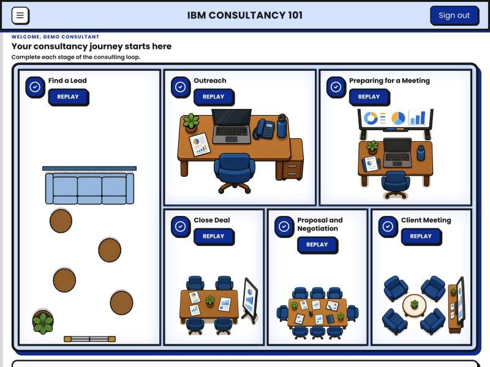
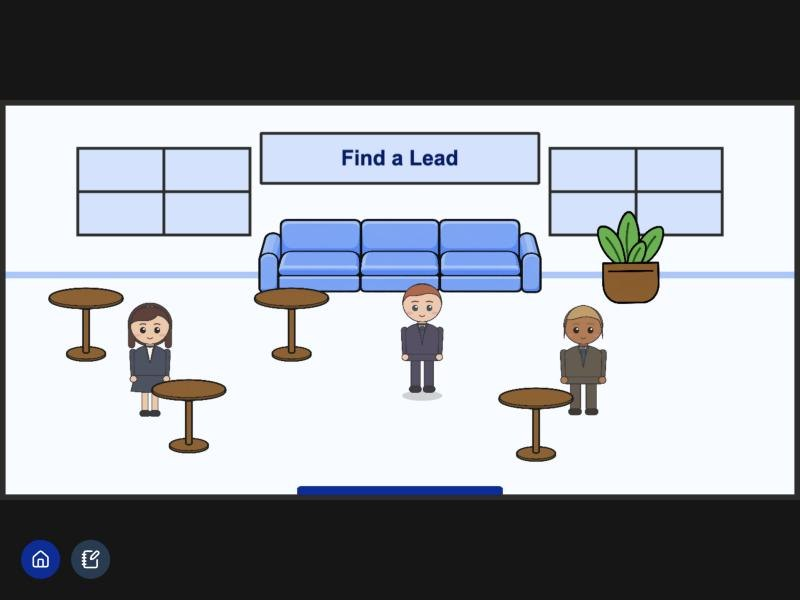
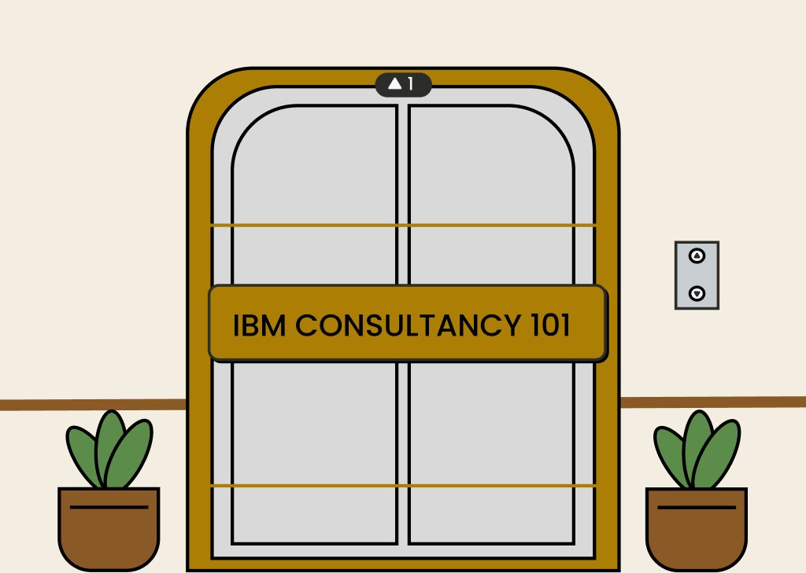
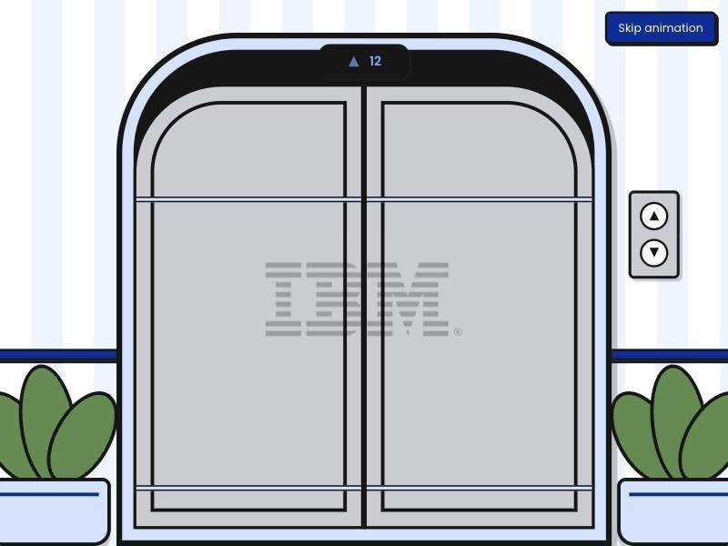
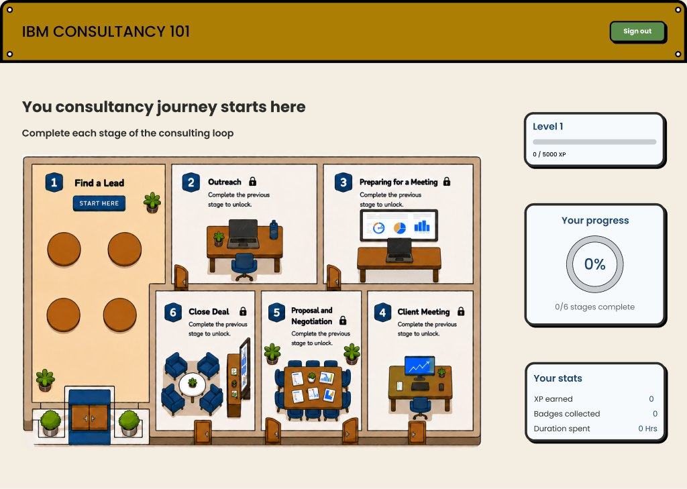
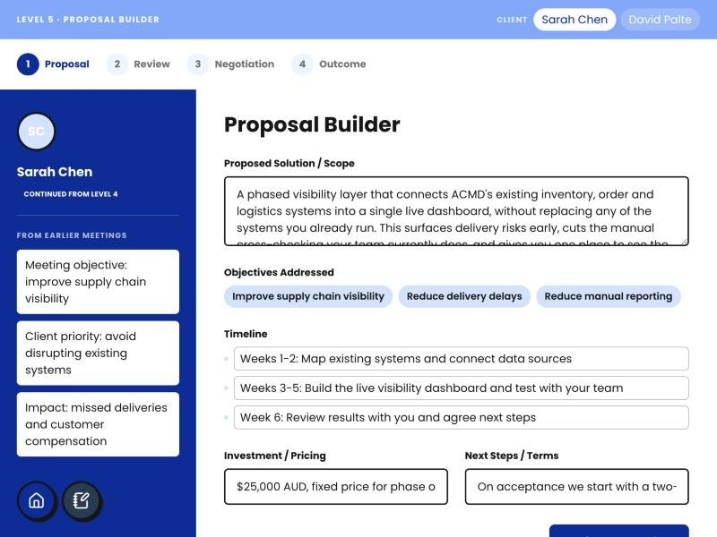

How do you teach a brand-new consultant to close a deal? Turns out, you make it a game.
and you get me to design it
PLAY THE LIVE GAME
first things first
New graduates joining IBM's consulting practice usually learn the job on the job: finding leads, cold emails, client meetings, objections, contracts, all for the first time in front of real clients on real, high-stakes projects.
Reading about consulting is easy. Knowing what to say when a client pushes back is not, and there was nowhere to practise that safely.
"Give trainee consultants a repeatable, low-stakes way to fail and improve before ever facing a real client."
give new consultants a safe place to practise the whole lifecycle before they meet a real client?
the short version
A web-based 2D role-playing game set in an office. Each stage of a real consulting engagement is a level. Talk to people, write the email, run the meeting, negotiate, and close the deal, all before meeting a real client.

how I got there
pull the brief apart
"A player with no consulting background can complete a full engagement loop unaided."
So the guidance had to live inside the design itself. No manual, no tutor in the room.
set the rules of the game
Interactive, explorable, with XP, badges and progress, not a training module in disguise.
That's how people actually learn. No leaderboard, no public ranking, room to get it wrong.
Fun on top, informative underneath. Every level guides you through a real consulting skill.
Alongside the wireframes, I kept a design notes document level by level, separating confirmed decisions, my own recommendations, and open questions for the BA and devs. Everyone always knew what was actually agreed.
turn the lifecycle into a building
The whole product is framed as an office building. Each stage of a real engagement is a room, unlocked in order. A locked, linear path means players make as few navigation decisions as possible and feel guided, because a real engagement is one continuous loop, not a set of separate tasks.
Walk the office and talk to everyone to find a lead worth pursuing.
Look them up, find their email, and write a cold email good enough to get a reply.
Review the client's file, set objectives, prep questions, and get feedback first.
A real back-and-forth conversation, scored on relationship, trust, understanding and more.
Build the proposal, then handle up to three rounds of client objections.
Write the contract terms and talk the client through their final concerns.


Entering the game is styled as taking a lift up, so it feels like being transported into the office, not logging into a website. We later cut the sign-in and sign-up pages: for an in-company training tool they were just extra steps.

An isometric "dollhouse" view of the floor, so players can see their entire journey before they start it, with XP, badges and progress alongside.
playful at first, serious by the end
THE GAME GETS MORE SERIOUS AS YOU GO.
Early levels live inside cosy game rooms to keep things low-stakes while players learn the patterns. By Levels 5 and 6, players are producing real client-facing documents, so the room disappears and the screen becomes a real professional tool, closer to what the job actually looks like.

Same card styles, buttons and spacing across every level, so players only learn each pattern once.
With a fixed camera and side-panel chats, a few facial expressions did the job of costly animated sprites.
Every screen keeps just the information needed for the task, so nothing competes for attention.
Near the end, we reskinned the main game in IBM's own solid-colour palette so it feels like IBM's tool, while the in-game levels kept their RPG warmth. The structure and flows stayed exactly the same; only the skin changed.
watch real people play it
I ran usability testing and informal interviews with RMIT students who know consulting from coursework, case comps and the consulting club, but have no on-the-job experience. That's exactly who we're designing for. They played the full loop, Level 1 to 6.
Levels 2 and 6 played smoothly. With only a handful of testers, I treated these as strong signals rather than proof, and recommended retesting once fixed.
After every sprint I walked our developers through the new wireframes, screen by screen.
Every level's purpose, decisions and test findings, plus a single list of everything the BA and devs still needed to define.
The improvements are documented, so if IBM takes the game further, the next team starts with a clear roadmap.
shipped in half the time, and it's live
weeks used. Delivered in half the timeline.
playable levels covering the full consulting lifecycle.
I WORKED ONE SPRINT AHEAD OF THE DEVS.
Designing a level the same week it was being built wasn't working. So early on I front-loaded and designed several levels at once. From then on, whatever the devs picked up, the finished design was already waiting.
Our IBM contact asked for an RPG-style game, and told us we'd captured exactly what she had in mind. She was extremely happy with what we delivered.
looking back
Not every brief comes with clear guidelines, and sometimes the client doesn't have the exact picture yet either. Instead of waiting for perfect requirements, I learned to design something, show it, hear what lands, and iterate. That loop is what got us to "exactly what I had in mind."
Test earlier and with more people, ideally real IBM consultants. Some of our most useful findings, like players not knowing a slow screen was still working, only showed up once people played the whole loop end to end. I'd also annotate directly in Figma as I go, not just in a separate doc.